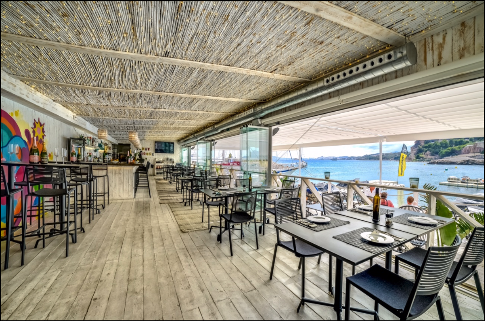
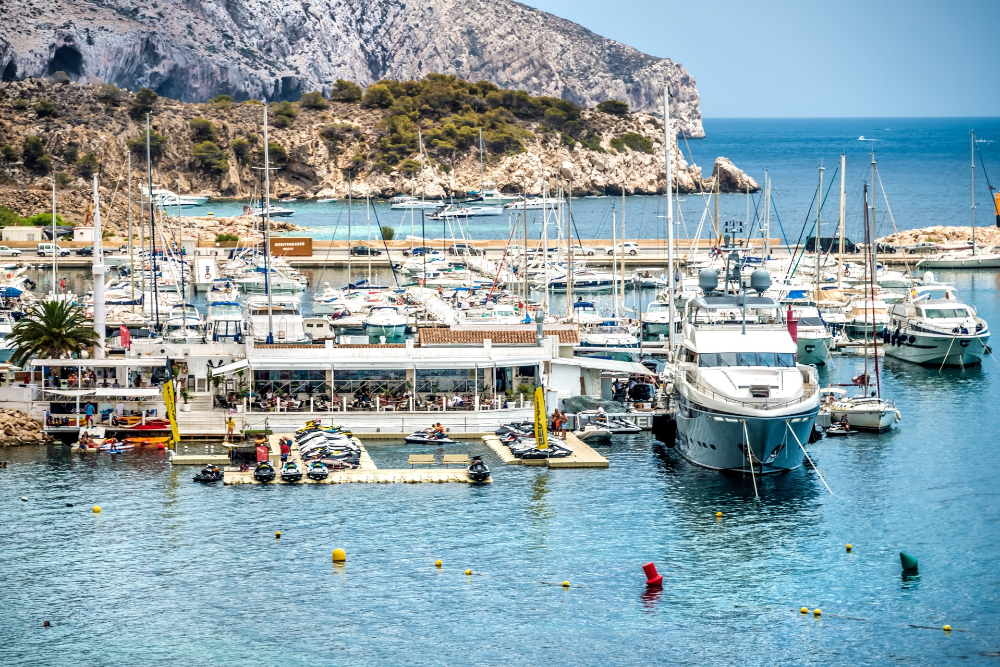
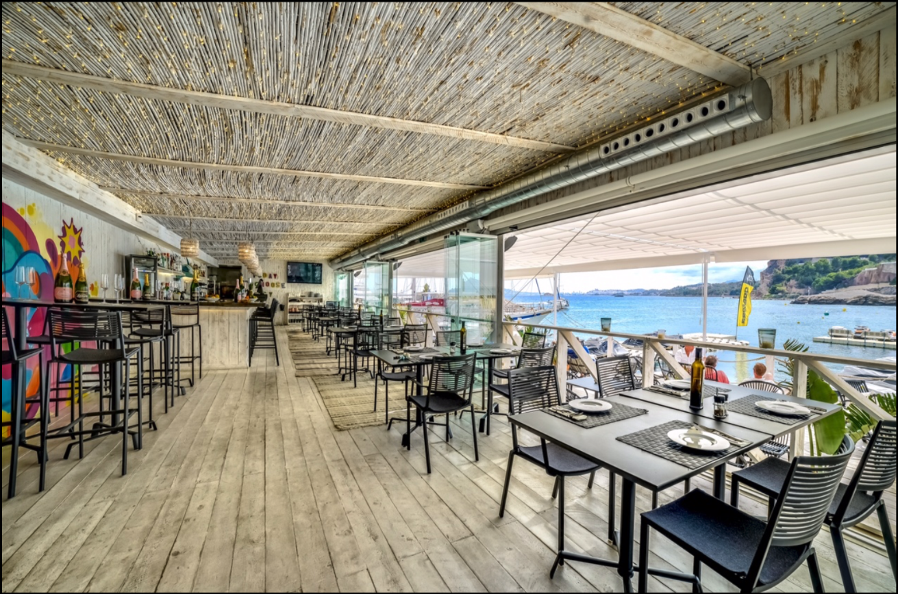
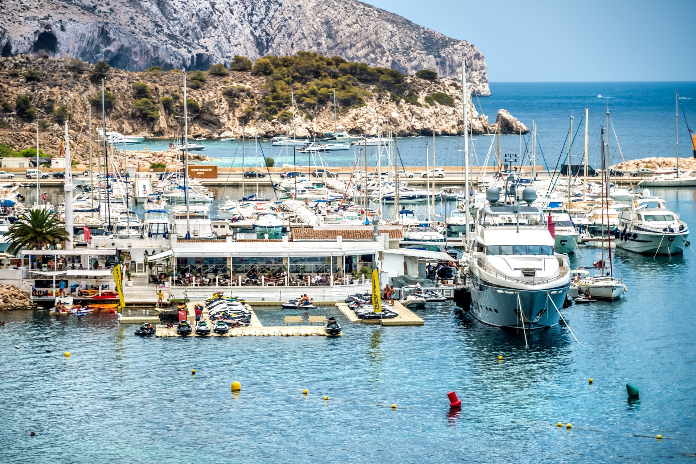
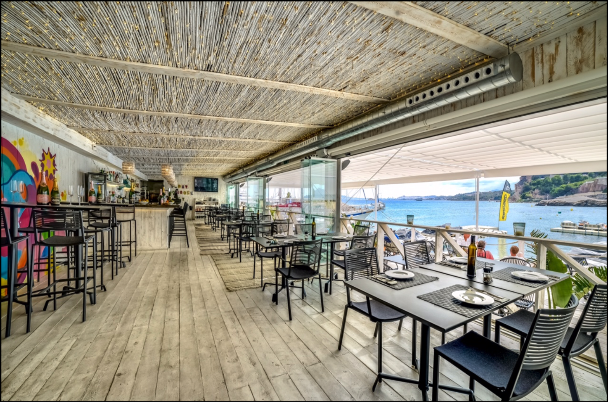
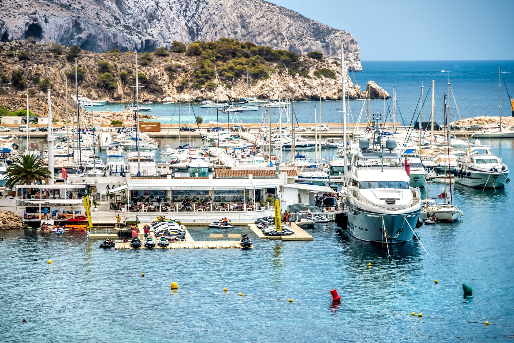

Bay Club is a restaurant located in the yatch marina called Marina Greenwich at Altea Hills foot, all open terraces that can be covered in case of bad weather this restaurant offers beautiful sea-views.
It is a multi-use space: restaurant, bar, lounge club, water sports...everything with a relaxed atmosphere. It is the perfect place to eat luch, dinner or just have a drink while you are listening music and enjoying the views
Their philosophy is Sea&Easy. Sea because they offer an exquisite selection of dishes elaborated with local and high quality products. Easy it is a fresh and original mediterranean cuisine with a nice and clean presentation


Location: Altea
Dining room capacities: max 135 pax
Price Level: average-high
Style: Mediterranean cuisine
Vegetarian Options/Special diets: Available
Handicapped facilities: Yes